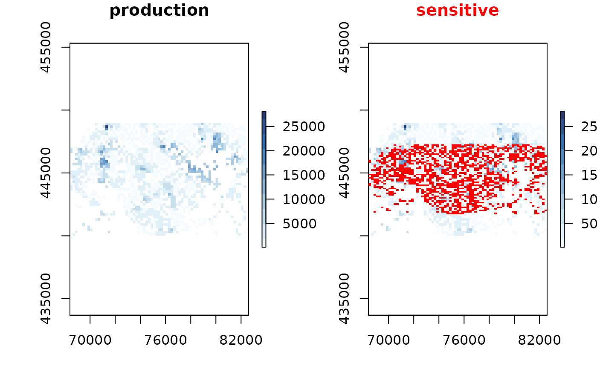
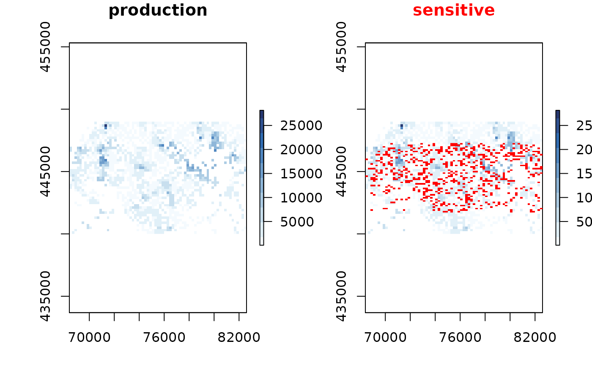
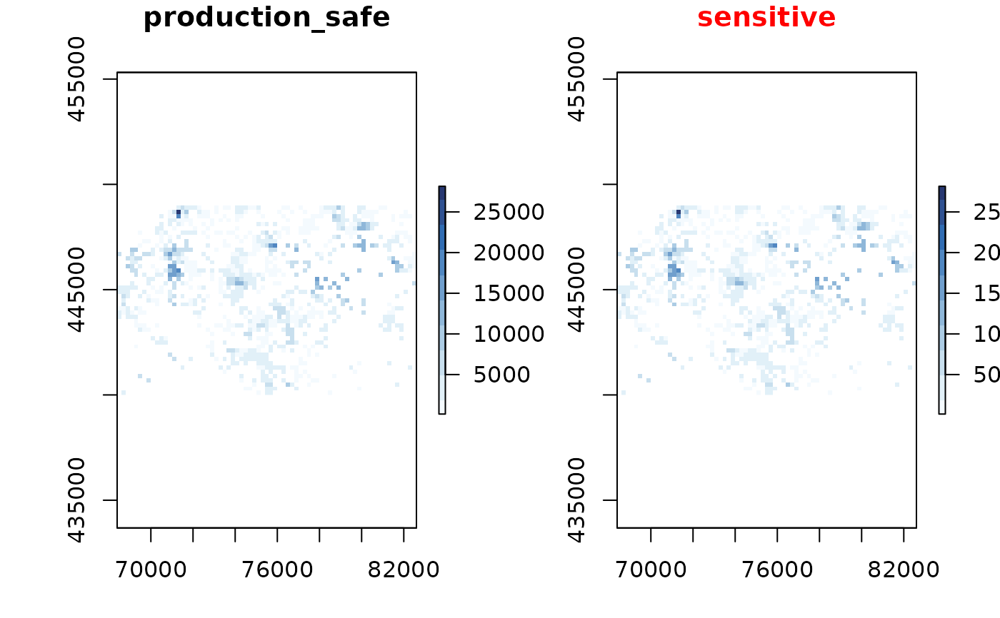

enterprises is generated from the dutch open data
BAG register.
The locations are realistic, but the associated data is simulated.
Format
An object of class SpatialPointsDataFrame with 8348 rows and 2 columns.
- production
numericsimulated production (lognormal).- fined
logical simulated variable if an enterprise is fined or not.
Source
Basisregistratie Adressen en Gebouwen: https://www.kadaster.nl/zakelijk/registraties/basisregistraties/bag/bag-producten
Examples
# \donttest{
library(sdcSpatial)
library(raster)
#> Loading required package: sp
data("enterprises")
production <- sdc_raster(enterprises, "production", min_count = 10)
print(production)
#> numeric sdc_raster object:
#> resolution: 200 200 , max_risk: 0.95 , min_count: 10
#> mean sensitivity score [0,1]: 0.8581363
# show the average production per cell
plot(production, "mean")

production$min_count <- 2 # adjust norm for sdc
plot(production)

production_safe <- remove_sensitive(production)
plot(production_safe)

# }